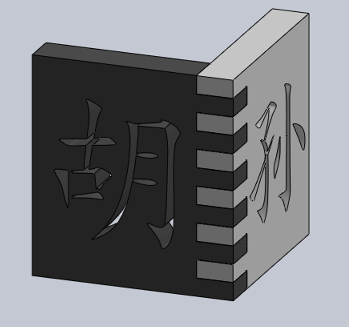
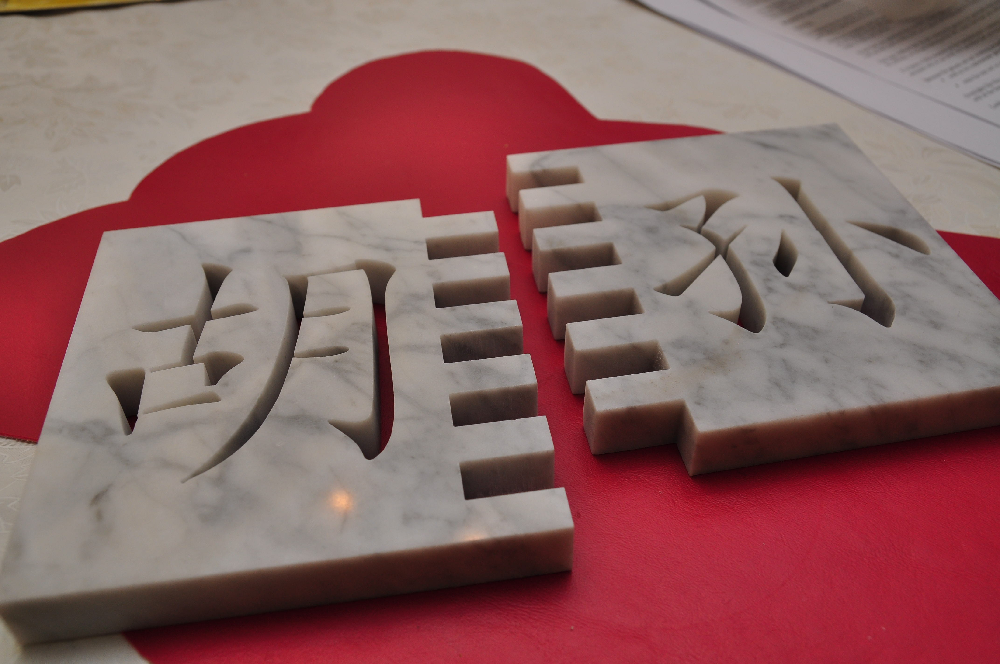
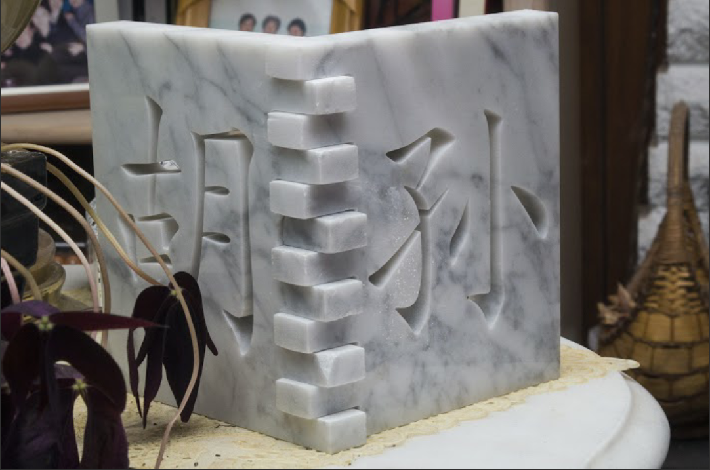

A friend asked me to help him come up with a Christmas present for his parents, based on the following criteria:
- Makes use of the waterjet cutter
- Made out of marble slabs
- Incorporates the Chinese characters for his father’s name, Hu (left), and his mother’s name, Sun (right)
After some brainstorming and sketching we settled on the idea of cutting each character into a rectangular slab, and connecting the two at a right angle using finger joints, such that the ornament would stand on its own, and could be backlit by a candle.
I whipped up a SolidWorks model that night, relentlessly wielding the spline tool to recreate the graceful curves of the characters, referencing the (very small) Hu and Sun pictures above.

My friend put his recent waterjet training to use, cutting out the marble (while I worked on a different project in the shop). We were both extremely pleased with how it came out.

And his parents were suitably impressed with how far he’s come from gifting them hot glue and popsicle stick crafts!
